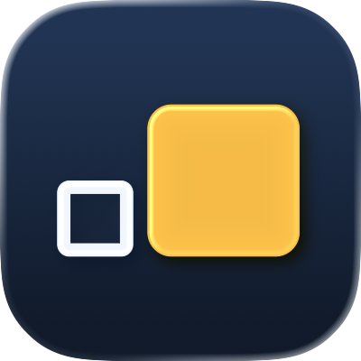

An iPhone app. Not released yet.
Say something new.
One word a day. Every way four dictionaries print it.
Samplenoun
mondegreen
- MON-duh-green
- mon-duh-GREEN
Printed by Cambridge and Dictionary.com for US English, and by Cambridge and Dictionary.com for UK English.
Lady Mondegreen never existed. She is what one writer heard in a Scottish ballad: "laid him on the green".
Tap a way to light its stressed syllable and hear its beat. Tiles, not a voice. In the app’s own audio, no synthetic voice says the word.
Who it is for
You’ve read it. Now say it.
VocabExpand is for people who know more words than they say: the word read a hundred times and never heard.
Each day brings one word. The app asks before it shows: where a word has a guess to make, you make it before anything plays. Then you see every way the dictionaries print, say it once out loud, use it, and keep it.
Every way
Nothing here is marked wrong.
A way a dictionary prints is never called wrong, and an accent is never an error. Where a word has several printed ways, you see every one, side by side, each with who prints it.
A count says what it counts. It is made per dictionary and per English, from the word’s record, and it says “printed by”, never “said by”.
The four
- CambridgeUK and US English
- LongmanUK and US English
- Dictionary.comUS English; its British entries come from another dictionary
- American HeritageUS English only
So no way is ever in “all four” for UK English: American Heritage has no British entry.
Beside them, Wiktionary: the only source here for Englishes beyond the UK and the US. Each is shown under Wiktionary’s own label.
The records so far
- 56words written and checked
- 79printed ways to say them
- 14words with more than one printed way
Counted from the records on 21 November 2026. None of these words has been posted yet.
The day
Guess, hear, say, use, keep.
Five steps, one action each. Six taps.
Where does the stress fall?
Pick the one you’d say. Nothing here is marked wrong.
1 / 5
Guess
The word arrives in print, cut into its syllables. Before anything plays you make one tap: the way you’d say it, or the syllable you’d stress. A word with one way and one syllable has no guess: its day opens on Hear.
No recording of this way.
2 / 5
Hear
Every way the dictionaries print, each with who prints it. Tap a way and its stressed syllable lights, to a beat of tile strikes. The word itself is heard only from a recording of a person: a way with no recording is shown and labelled, not played. No record holds a recording yet.
Say it out loud.
Record yourself
Stays on this iPhone. Deleted when you leave, or when VocabExpand next opens.
Next
3 / 5
Say
Aloud, once. If you choose, record yourself and play it back. As designed today there is no verdict; whether a check is added is not decided, and it would never give a score.
What it means
Where it fits
Which one uses it right?
4 / 5
Use
What it means, and where it fits. Then three sentences: one uses the word right, and two misuse it the way a person would. You pick. A sentence of your own gets no grade.
Where it’s from
Keep itDon’t keep
5 / 5
Keep
Where it’s from, and what is worth knowing. Keep the word and it comes back twice with its meaning hidden: from two days after you keep it, then from four weeks after you say “Had it”, or two days after “Not yet”.
Then you are done. Tomorrow’s word comes tomorrow.
A drawing of the app, in its own colours and words.
Then done
One word, then done.
No feed, no points, no streak to keep. No count of days anywhere.
One notification a day: the word. It arrives at the time you choose, 9:00 unless you change it. Two others can come: a notice the day after the phone’s last planned word, and one reminder while a free trial is set to renew.
The day’s word is the same for everyone, and it opens at midnight where you are.
The words you kept come back on booked dates, at most three in a day. A return never sends a notification.
Privacy
No account. No tracking. No analytics.
VocabExpand sends nothing you type or say.
This site keeps the same promise. It sets no cookies and has no analytics, no trackers, no forms and no embeds, and every file it uses is served from the site itself.
Free and paid
The word is free. So is its way back.
Free
- Today’s word and its whole loop; every return
- Every word since joining, and search over them
- The notification, one widget look; recording yourself; the share card
No account, no quiz and no trial before the first word. No ads.
VocabExpand+
- Every word from before you joined, with its loop
- Search over every word, from past days only
- More widget looks
$29.99 a year or $4.99 a month, each with a 7-day free trial, or $79.99 once.
One word a day for everyone, paying or not. VocabExpand+ never sells more words a day.
VocabExpand is not released, so nothing can be downloaded or bought today.

Not on the App Store yet.
VocabExpand is an iPhone app for iOS 26.0 and later. It is not released, and no release date has been set.